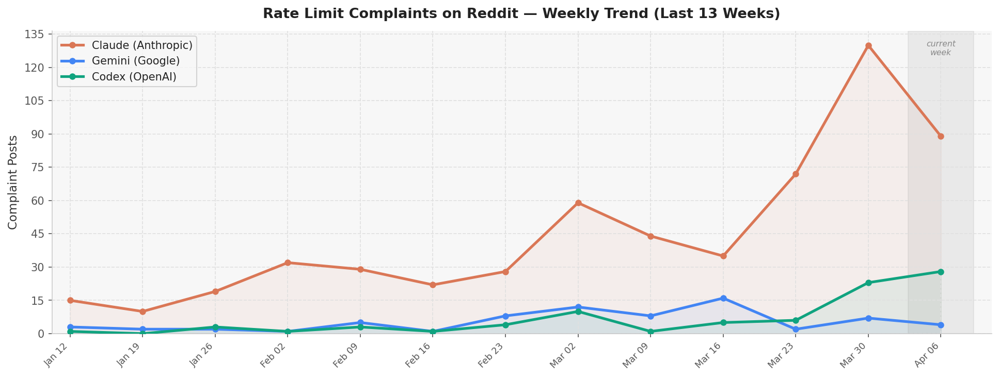
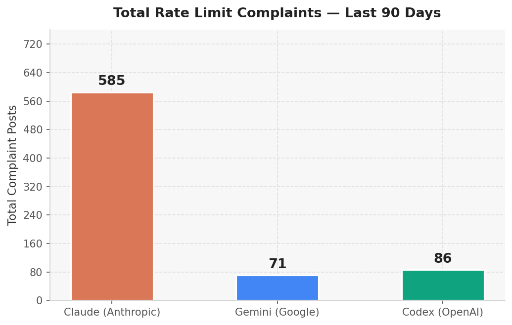

Claude
585
complaint posts (90 days)Gemini
71
complaint posts (90 days)Codex
86
complaint posts (90 days)Weekly Trend — Last 13 Weeks

Total Complaints — Last 90 Days

How classification works (no AI used)
- Rate-limit detection: regex patterns matching "rate limit", "quota exceeded", "429", "throttled", "TPM/RPM", "out of credits", etc.
- Complaint scoring (threshold ≥ 2): +3 for rate limit in title, +3 for strong language (frustrated, broken…), +2 for moderate (can't use, stopped working…), +1 for mild (issue, stuck…), +1 for emotional punctuation. Pure informational posts ("what are the rate limits?") score too low.
- Negation filter: posts about bypassing / praising the absence of rate limits are excluded.
-
Model tagging:
Claude — keywords: claude, anthropic, haiku, sonnet, opus
Gemini — keywords: gemini, google ai, ai studio, vertex ai, bard
Codex — keywords: codex, openai codex, codex cli - Subreddits monitored: r/ClaudeAI, r/GoogleGemini, r/OpenAI, r/ChatGPT, r/LocalLLaMA, r/artificial, r/singularity, r/MachineLearning, r/programming, r/github